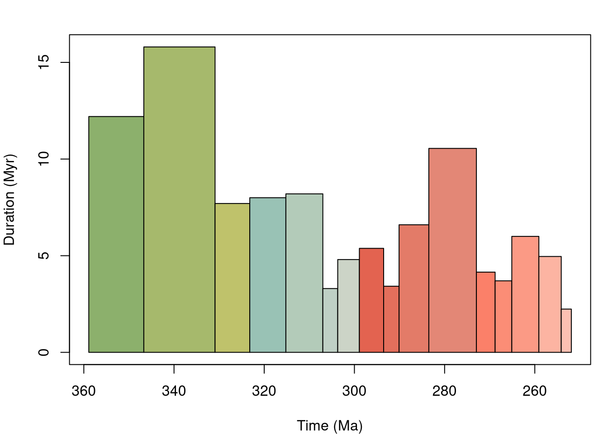
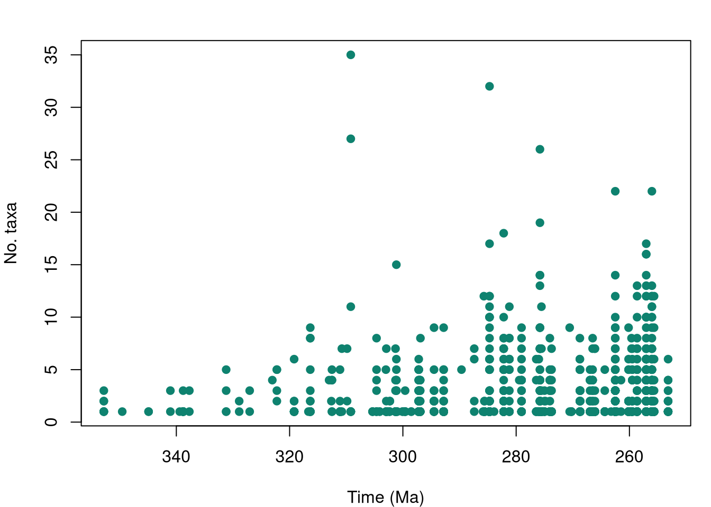
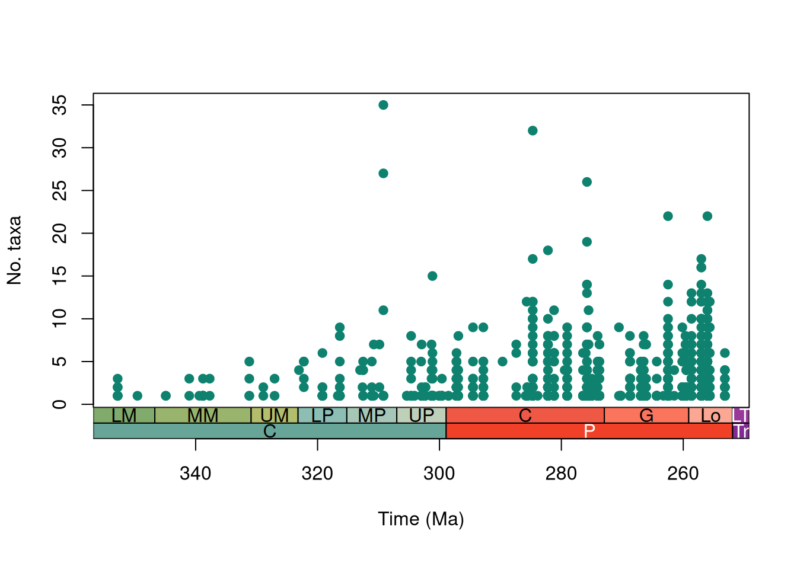
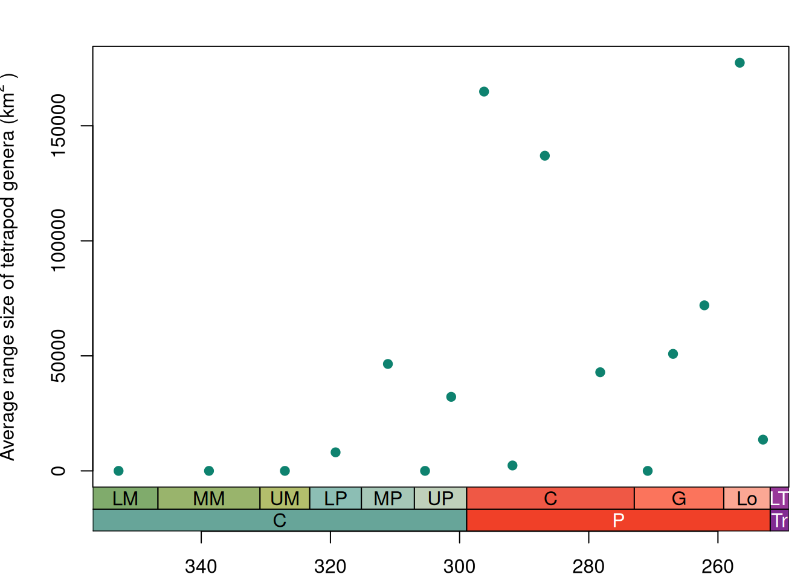

2026-11-14
In this tutorial, you will use palaeoverse to explore the temporal and spatial diversity patterns of Palaeozoic tetrapods, using data from the Paleobiology Database (Uhen et al. 2026).
Along the way, you will meet many functions used in a typical palaeobiological workflow including exploring data, assigning a common time scale, binning occurrences, estimating palaeocoordinates, and summarising the results.
To help cement your knowledge, there are multiple exercises throughout this tutorial for you to work through.
___ are incomplete. Replace each ___ before running them locally.The name Tetrapoda stems from the Ancient Greek words for ‘four’ and ‘feet’. It is a clade which originated when chordates first evolved limbs and developed the ability to walk, gradually transitioning from aquatic to terrestrial environments. All terrestrial four-limbed animals are members of this clade, including amphibians, reptiles, and mammals. This major evolutionary transition has received a lot of attention, in part because this clade represents our ancestors.
The fossil record of early tetrapods is considered relatively sparse, meaning that we do not have a clear picture of the timing and order of the acquisition of the different adaptations needed to thrive on land (e.g. Dunne et al. 2018). But just how sparse is the record, and what does it indicate about how diverse the earliest tetrapods were? Here, we will address the question “how did tetrapod diversity develop over the Palaeozoic?” by quantifying and comparing temporal and spatial diversity patterns.
Let’s start by installing and loading the palaeoverse R package:
tetrapods datasetIn this tutorial, we will be using tetrapods for our analyses, an occurrence database of early tetrapods (n = 5270) drawn from the Paleobiology Database.
Recall from the introduction that functions in palaeoverse are designed around the assumption that your data are stored in an occurrence data.frame, which is the expected input for almost all functions. The package includes two example occurrence datasets from different data sources: tetrapods and reefs.
tetrapods datasetLoad the tetrapods dataset:
tetrapods datasetBefore conducting any analyses, it is always a good idea to explore your data first and understand what you are working with. Let’s take a look at the data frame:
tetrapods dataset [1] "occurrence_no" "collection_no" "identified_name"
[4] "identified_rank" "accepted_name" "accepted_rank"
[7] "early_interval" "late_interval" "max_ma"
[10] "min_ma" "phylum" "class"
[13] "order" "family" "genus"
[16] "abund_value" "abund_unit" "lng"
[19] "lat" "collection_name" "cc"
[22] "formation" "stratgroup" "member"
[25] "zone" "lithology1" "environment"
[28] "pres_mode" "taxon_environment" "motility"
[31] "life_habit" "diet" 'data.frame': 5270 obs. of 32 variables:
$ occurrence_no : num 146665 147090 147521 147523 147563 ...
$ collection_no : num 12943 13004 13043 13044 13046 ...
$ identified_name : chr "n. gen. Anconastes n. sp. vesperus" "Gorgonopsia indet." "n. gen. Procolophon n. sp. trigoniceps" "n. gen. Ophiodeirus n. sp. casei" ...
$ identified_rank : chr "species" "suborder" "species" "species" ...
$ accepted_name : chr "Anconastes vesperus" "Gorgonopsia" "Procolophon trigoniceps" "Araeoscelis casei" ...
$ accepted_rank : chr "species" "suborder" "species" "species" ...
$ early_interval : chr "Missourian" "Capitanian" "Induan" "Artinskian" ...
$ late_interval : chr "Gzhelian" NA "Olenekian" NA ...
$ max_ma : num 306 265 252 290 279 ...
$ min_ma : num 299 260 247 279 272 ...
$ phylum : chr "Chordata" "Chordata" "Chordata" "Chordata" ...
$ class : chr "Osteichthyes" "Osteichthyes" "Reptilia" "Reptilia" ...
$ order : chr "Temnospondyli" "Cotylosauria" "NO_ORDER_SPECIFIED" "Araeoscelidia" ...
$ family : chr "Trematopidae" NA "Procolophonidae" "Araeoscelidae" ...
$ genus : chr "Anconastes" NA "Procolophon" "Araeoscelis" ...
$ abund_value : num 2 1 10 2 6 2 1 39 56 2 ...
$ abund_unit : chr "specimens" "specimens" "specimens" "individuals" ...
$ lng : num -106.3 22 26.5 -98.9 -99.2 ...
$ lat : num 36.3 -32.4 -32.1 33.6 33.8 ...
$ collection_name : chr "El Cobre Canyon" "Hottentotsrivier Farm" "Donnybrook (Queenstown District)" "Mouth of Godwin Creek" ...
$ cc : chr "US" "ZA" "ZA" "US" ...
$ formation : chr "Cutler" "Abrahamskraal" "Katberg" "Nocona" ...
$ stratgroup : chr NA "Beaufort" "Beaufort" "Wichita" ...
$ member : chr NA NA NA NA ...
$ zone : chr NA "Tapinocephalus Assemblage" NA NA ...
$ lithology1 : chr "siltstone" "sandstone" "mudstone" "conglomerate" ...
$ environment : chr "dry floodplain" "\"floodplain\"" "fluvial indet." "terrestrial indet." ...
$ pres_mode : chr "body" "body,mold/impression" "body" "body" ...
$ taxon_environment: chr "brackish,freshwater,terrestrial" "terrestrial" "terrestrial" "terrestrial" ...
$ motility : chr "actively mobile" "actively mobile" "actively mobile" "actively mobile" ...
$ life_habit : chr "ground dwelling" NA NA NA ...
$ diet : chr "carnivore" "carnivore" NA NA ...Note the structure of the dataset: each row contains a unique occurrence and each column contains a unique variable. Now we can get some more general information about what is contained in the dataset, such as the variable names and the types of data held for those variables:
tetrapods dataset [1] "occurrence_no" "collection_no" "identified_name"
[4] "identified_rank" "accepted_name" "accepted_rank"
[7] "early_interval" "late_interval" "max_ma"
[10] "min_ma" "phylum" "class"
[13] "order" "family" "genus"
[16] "abund_value" "abund_unit" "lng"
[19] "lat" "collection_name" "cc"
[22] "formation" "stratgroup" "member"
[25] "zone" "lithology1" "environment"
[28] "pres_mode" "taxon_environment" "motility"
[31] "life_habit" "diet" 'data.frame': 5270 obs. of 32 variables:
$ occurrence_no : num 146665 147090 147521 147523 147563 ...
$ collection_no : num 12943 13004 13043 13044 13046 ...
$ identified_name : chr "n. gen. Anconastes n. sp. vesperus" "Gorgonopsia indet." "n. gen. Procolophon n. sp. trigoniceps" "n. gen. Ophiodeirus n. sp. casei" ...
$ identified_rank : chr "species" "suborder" "species" "species" ...
$ accepted_name : chr "Anconastes vesperus" "Gorgonopsia" "Procolophon trigoniceps" "Araeoscelis casei" ...
$ accepted_rank : chr "species" "suborder" "species" "species" ...
$ early_interval : chr "Missourian" "Capitanian" "Induan" "Artinskian" ...
$ late_interval : chr "Gzhelian" NA "Olenekian" NA ...
$ max_ma : num 306 265 252 290 279 ...
$ min_ma : num 299 260 247 279 272 ...
$ phylum : chr "Chordata" "Chordata" "Chordata" "Chordata" ...
$ class : chr "Osteichthyes" "Osteichthyes" "Reptilia" "Reptilia" ...
$ order : chr "Temnospondyli" "Cotylosauria" "NO_ORDER_SPECIFIED" "Araeoscelidia" ...
$ family : chr "Trematopidae" NA "Procolophonidae" "Araeoscelidae" ...
$ genus : chr "Anconastes" NA "Procolophon" "Araeoscelis" ...
$ abund_value : num 2 1 10 2 6 2 1 39 56 2 ...
$ abund_unit : chr "specimens" "specimens" "specimens" "individuals" ...
$ lng : num -106.3 22 26.5 -98.9 -99.2 ...
$ lat : num 36.3 -32.4 -32.1 33.6 33.8 ...
$ collection_name : chr "El Cobre Canyon" "Hottentotsrivier Farm" "Donnybrook (Queenstown District)" "Mouth of Godwin Creek" ...
$ cc : chr "US" "ZA" "ZA" "US" ...
$ formation : chr "Cutler" "Abrahamskraal" "Katberg" "Nocona" ...
$ stratgroup : chr NA "Beaufort" "Beaufort" "Wichita" ...
$ member : chr NA NA NA NA ...
$ zone : chr NA "Tapinocephalus Assemblage" NA NA ...
$ lithology1 : chr "siltstone" "sandstone" "mudstone" "conglomerate" ...
$ environment : chr "dry floodplain" "\"floodplain\"" "fluvial indet." "terrestrial indet." ...
$ pres_mode : chr "body" "body,mold/impression" "body" "body" ...
$ taxon_environment: chr "brackish,freshwater,terrestrial" "terrestrial" "terrestrial" "terrestrial" ...
$ motility : chr "actively mobile" "actively mobile" "actively mobile" "actively mobile" ...
$ life_habit : chr "ground dwelling" NA NA NA ...
$ diet : chr "carnivore" "carnivore" NA NA ...Details on the dataset (e.g. source) are also available via the usual documentation call:
Let’s now generate some simple summary statistics, to help us understand the scope and scale of the dataset.
tetrapodstetrapods datasetExercise 1: Answers
nrow(tetrapods): 5270max(tetrapods$max_ma, na.rm = TRUE): 358.9min(tetrapods$min_ma, na.rm = TRUE): 247.2sum(is.na(tetrapods$lat)): 0In order to investigate diversity through time, we want to allocate each of our occurrences to a single time bin. First, we will generate stage-level bins spanning the Carboniferous and Permian, using palaeoverse::time_bins().

bin interval_name rank max_ma mid_ma min_ma duration_myr abbr colour font
1 1 Tournaisian stage 358.9 352.80 346.7 12.2 T #8CB06C black
2 2 Visean stage 346.7 338.80 330.9 15.8 V #A6B96C black
3 3 Serpukhovian stage 330.9 327.05 323.2 7.7 Se #BFC26B black
4 4 Bashkirian stage 323.2 319.20 315.2 8.0 B #99C2B5 black
5 5 Moscovian stage 315.2 311.10 307.0 8.2 M #B3CBB9 black
6 6 Kasimovian stage 307.0 305.35 303.7 3.3 Ka #BFD0C5 blackThe function gives us the option to generate a plot of our time bins - here we can see some variation in the duration of our different stages, with particularly long stages in the Early Carboniferous and shorter ones across the Carboniferous-Permian boundary. This is a form of structure inherent to our dataset, and something we should bear in mind for our downstream analyses.
We can also take a look at the structure of the outputted table which describes the time bins.
bin interval_name rank max_ma mid_ma min_ma duration_myr abbr colour font
1 1 Tournaisian stage 358.9 352.80 346.7 12.2 T #8CB06C black
2 2 Visean stage 346.7 338.80 330.9 15.8 V #A6B96C black
3 3 Serpukhovian stage 330.9 327.05 323.2 7.7 Se #BFC26B black
4 4 Bashkirian stage 323.2 319.20 315.2 8.0 B #99C2B5 black
5 5 Moscovian stage 315.2 311.10 307.0 8.2 M #B3CBB9 black
6 6 Kasimovian stage 307.0 305.35 303.7 3.3 Ka #BFD0C5 black interval_max_ma interval_mid_ma interval_min_ma
1 307.000 302.950 298.90
2 265.100 262.100 259.10
3 251.902 249.551 247.20
4 290.100 286.800 283.50
5 283.500 278.225 272.95In the Paleobiology Database, occurrences are allocated to named temporal intervals, with the numeric dates filled in using the Database’s internal timescale. We are going to generate numeric ages for these named intervals using palaeoverse::look_up(), to check whether these are up-to-date.
tetrapods?look_up()?Exercise 2: Answers
length(unique(c(tetrapods$early_interval, tetrapods$late_interval))): 74(sum(is.na(tetrapods$interval_max_ma))/nrow(tetrapods)): 0.0301708# Make sure that any values which could not be matched contain their original values
tetrapods$interval_max_ma <- ifelse(is.na(tetrapods$interval_max_ma),
tetrapods$max_ma,
tetrapods$interval_max_ma)
tetrapods$interval_min_ma <- ifelse(is.na(tetrapods$interval_min_ma),
tetrapods$min_ma,
tetrapods$interval_min_ma)
tetrapods$interval_mid_ma <- (tetrapods$min_ma + tetrapods$max_ma)/2
# Check that there are no remaining NA values
sum(is.na(tetrapods$interval_max_ma))[1] 0Now that we have an understanding of the amount of uncertainty surrounding the age of some of our occurrences, let’s tidy it up by filling in the ages of intervals not included in the look_up() table with those that they were allocated by the Paleobiology Database.
# Make sure that any values which could not be matched contain their original values
tetrapods$interval_max_ma <- ifelse(is.na(tetrapods$interval_max_ma),
tetrapods$max_ma,
tetrapods$interval_max_ma)
tetrapods$interval_min_ma <- ifelse(is.na(tetrapods$interval_min_ma),
tetrapods$min_ma,
tetrapods$interval_min_ma)
tetrapods$interval_mid_ma <- (tetrapods$min_ma + tetrapods$max_ma)/2
# Check that there are no remaining NA values
sum(is.na(tetrapods$interval_max_ma))[1] 0Now we are ready to allocate our occurrences to our time bins. We will do this using the palaeoverse::bin_time() function, with the ‘mid’ method.
It seems we have hit an error!
Why are we getting an error when we try to bin our occurrences?
Exercise 3: Answer
If we remember back to our initial exploration of the data, the youngest occurrences in the dataset are Early Triassic in age. This sits outside of the Carboniferous-Permian interval across which we have generated our time bins. The function is giving us an error because these Early Triassic occurrences are too young to be placed into any of the provided time bins.
We will remove these problematic occurrences and try again.
id n_bins bin_assignment bin_midpoint
1 1 2 7 301.300
2 2 1 14 262.100
4 3 2 10 286.800
5 4 2 11 278.225
6 5 6 11 278.225This time we have received a warning, but no error. Let’s take a look at the new columns added to the dataset.
id n_bins bin_assignment bin_midpoint
1 1 2 7 301.300
2 2 1 14 262.100
4 3 2 10 286.800
5 4 2 11 278.225
6 5 6 11 278.225
1 2 3 4 5 6 7 8 9
703 2084 854 162 31 190 24 2 59
1 2 3 4 5 6
0.1710878559 0.5071793624 0.2078364566 0.0394256510 0.0075444147 0.0462399611
7 8 9
0.0058408372 0.0004867364 0.0143587248 The second of these new columns is n_bins, which tells us how many stages are spanned by our occurrences. We can summarise this information to explore how bin_time has processed our data.
We can see that around 70% of the occurrences can be allocated to a single stage, whereas the remaining 30% span between 2 and 8 geological stages. For this 30%, the method that we choose to bin the data becomes very important, as it determines which of these stages the occurrence will be placed within.
Remember at the start of the exercise, we saw that every occurrence has a latitude and longitude. However, this corresponds to the modern-day coordinates of the locality in which they were found. If we want to understand spatial patterns in deep time, we need to infer the palaeo-coordinates at which the fossils were deposited.
We can use palaeoverse::palaeorotate() to use a global plate model (GPM) to infer how rocks on the Earth’s surface have shifted over time due to continental drift. You can find more information about how this works using help(palaeorotate). It’s worth noting that different GPMs will produce different results (Buffan et al. 2023), but for now we will go ahead with using the PALEOMAP GPM (Scotese & Wright 2018).
p_lng p_lat
1 -39.1618 2.9214
2 -33.9023 -59.1946
4 -30.1811 -0.9483
5 -28.4255 2.7177
6 -27.6584 2.2973
7 -16.5579 -6.0513[1] 0Let’s now take a look at our new columns containing the palaeocoordinates.
p_lng p_lat
1 -39.1618 2.9214
2 -33.9023 -59.1946
4 -30.1811 -0.9483
5 -28.4255 2.7177
6 -27.6584 2.2973
7 -16.5579 -6.0513[1] 0# Generate hex cells with diameter around 100km, and bin occurrences
mid_tetrapods <- bin_space(occdf = mid_tetrapods,
lng = "p_lng",
lat = "p_lat",
spacing = 100)
# Show the first 6 rows of the new columns added using `bin_space()`.
head(mid_tetrapods[, c("cell_ID", "cell_centroid_lng", "cell_centroid_lat")]) cell_ID cell_centroid_lng cell_centroid_lat
1 8380d4fffffffff -38.83199 3.041113
2 83dd68fffffffff -34.66666 -59.098482
4 837d4bfffffffff -29.87896 -1.198269
5 837c45fffffffff -28.90252 2.777952
6 837c44fffffffff -27.94209 2.183584
7 837da3fffffffff -16.16673 -6.154225We can now generate our spatial bins and lace our occurrences into them based on their palaeo-coordinates. Here we will generate and bin into equal-area hexagonal grid cells (based on Uber’s H3 system).
We can see that each occurrence has been placed into a grid cell, described using a unique ID, and with the centroid of the cell also provided.
In many cases, palaeobiologists count unique taxa by retaining only unique occurrences identified to a given taxonomic resolution (e.g. genera or species); however, this can result in some useful information being discarded. The tax_unique function retains occurrences identified to a coarser taxonomic resolution which are not already represented within the dataset. Take, for example, the following occurrences:
A filter for species-level identifications would reduce the species richness to just two (A. sarcophagus and T. rex). However, none of these clades are nested within one another, so each of the indeterminately identified occurrences represents at least one species not already represented in the dataset. palaeoverse::tax_unique() is designed to deal with such taxonomic data and would retain all five ‘species’ in this example. For further details see help(tax_unique).
This function can be especially helpful when we want to quantify alpha (local) diversity. Let’s use this function to investigate the number of unique genera in our dataset.
class order family genus
1 Osteichthyes Dicynodontia <NA> Abajudon
2 Osteichthyes Cotylosauria Charassognathidae Abdalodon
3 Reptilia <NA> Nyctiphruretidae Abyssomedon
4 Osteichthyes Temnospondyli Zatracheidae Acanthostomatops
5 Reptilia Eosuchia <NA> Acerosodontosaurus
6 Osteichthyes Temnospondyli Trematopidae Acheloma
unique_name
1 Abajudon sp.
2 Abdalodon sp.
3 Abyssomedon sp.
4 Acanthostomatops sp.
5 Acerosodontosaurus sp.
6 Acheloma sp.How many occurrences are retained in the dataset by tax_unique(), which would otherwise have been discarded?
Exercise 4: Answer
length(unique(tet_genera$unique_name)): 807 For the original dataset, we need to remember not to count values (genus names) that are NA. length(unique(na.omit(mid_tetrapods$genus))): 803 This shows us that there are three additional unique genera retained when we use tax_unique.
class order family genus
717 Reptilia <NA> Styracocephalidae Styracocephalus
718 Osteichthyes Cotylosauria Gorgonopidae Suchogorgon
719 Osteichthyes <NA> Chroniosuchidae Suchonica
unique_name
717 Styracocephalus sp.
718 Suchogorgon sp.
719 Suchonica sp.We can see the additional occurrences retained at the end of our output table.
class order family genus
717 Reptilia <NA> Styracocephalidae Styracocephalus
718 Osteichthyes Cotylosauria Gorgonopidae Suchogorgon
719 Osteichthyes <NA> Chroniosuchidae Suchonica
unique_name
717 Styracocephalus sp.
718 Suchogorgon sp.
719 Suchonica sp. class order family genus unique_name
1 Osteichthyes <NA> <NA> <NA> Osteichthyes indet.
2 Osteichthyes Temnospondyli Dissorophidae Parioxys Parioxys sp.
3 Osteichthyes Cotylosauria <NA> Archeria Archeria sp.
4 Reptilia <NA> Bolosauridae Bolosaurus Bolosaurus sp.
5 Osteichthyes Cotylosauria Diadectidae Diadectes Diadectes sp.
6 Osteichthyes Cotylosauria Sphenacodontidae Dimetrodon Dimetrodon sp.
collection_no
1 11149
2 11152
3 11165
4 11165
5 11165
6 11165Now that we’ve seen what this function can do, let’s apply it in a way that lets us check for unique genera in each collection (= locality) using palaeoverse::group_apply():
class order family genus
717 Reptilia <NA> Styracocephalidae Styracocephalus
718 Osteichthyes Cotylosauria Gorgonopidae Suchogorgon
719 Osteichthyes <NA> Chroniosuchidae Suchonica
unique_name
717 Styracocephalus sp.
718 Suchogorgon sp.
719 Suchonica sp. class order family genus unique_name
1 Osteichthyes <NA> <NA> <NA> Osteichthyes indet.
2 Osteichthyes Temnospondyli Dissorophidae Parioxys Parioxys sp.
3 Osteichthyes Cotylosauria <NA> Archeria Archeria sp.
4 Reptilia <NA> Bolosauridae Bolosaurus Bolosaurus sp.
5 Osteichthyes Cotylosauria Diadectidae Diadectes Diadectes sp.
6 Osteichthyes Cotylosauria Sphenacodontidae Dimetrodon Dimetrodon sp.
collection_no
1 11149
2 11152
3 11165
4 11165
5 11165
6 11165# Get the names of unique genera per collection
unique_genera <- unique(coll_genera[, c("unique_name", "collection_no")])
# Calculate the number of unique genera per collection
coll_taxa <- group_apply(unique_genera, group = "collection_no", fun = nrow)
# Rename column names:
colnames(coll_taxa) <- c("n_taxa", "collection_no")
# Take a quick look at the new dataframe
head(coll_taxa) n_taxa collection_no
1 1 104796
2 1 106270
3 3 106558
4 8 108766
5 3 109702
6 1 11149In addition to the columns we had before, we have now gained a collection_no column. We are now able to count the unique number of genera per collection.
class order family genus
717 Reptilia <NA> Styracocephalidae Styracocephalus
718 Osteichthyes Cotylosauria Gorgonopidae Suchogorgon
719 Osteichthyes <NA> Chroniosuchidae Suchonica
unique_name
717 Styracocephalus sp.
718 Suchogorgon sp.
719 Suchonica sp. class order family genus unique_name
1 Osteichthyes <NA> <NA> <NA> Osteichthyes indet.
2 Osteichthyes Temnospondyli Dissorophidae Parioxys Parioxys sp.
3 Osteichthyes Cotylosauria <NA> Archeria Archeria sp.
4 Reptilia <NA> Bolosauridae Bolosaurus Bolosaurus sp.
5 Osteichthyes Cotylosauria Diadectidae Diadectes Diadectes sp.
6 Osteichthyes Cotylosauria Sphenacodontidae Dimetrodon Dimetrodon sp.
collection_no
1 11149
2 11152
3 11165
4 11165
5 11165
6 11165# Get the names of unique genera per collection
unique_genera <- unique(coll_genera[, c("unique_name", "collection_no")])
# Calculate the number of unique genera per collection
coll_taxa <- group_apply(unique_genera, group = "collection_no", fun = nrow)
# Rename column names:
colnames(coll_taxa) <- c("n_taxa", "collection_no")
# Take a quick look at the new dataframe
head(coll_taxa) n_taxa collection_no
1 1 104796
2 1 106270
3 3 106558
4 8 108766
5 3 109702
6 1 11149# Take the columns pertaining to collections and their ages in millions of years:
coll_info <- mid_tetrapods[, c("collection_no", "max_ma", "interval_mid_ma", "min_ma")]
# Remove duplicated collections based on the collection number (column 1)
coll_info <- coll_info[!duplicated(coll_info[1]),]
# Combine this dataframe with the dataframe from above
alpha_data <- merge(coll_info, coll_taxa, by = "collection_no")
# Take a look:
head(alpha_data) collection_no max_ma interval_mid_ma min_ma n_taxa
1 11149 290.1 284.70 279.3 1
2 11152 295.5 283.90 272.3 1
3 11165 298.9 294.50 290.1 9
4 11323 303.4 301.15 298.9 1
5 12943 305.9 302.40 298.9 1
6 12976 279.3 275.80 272.3 7In order to plot alpha diversity through time, we will also need to add interval age data to this table.
class order family genus
717 Reptilia <NA> Styracocephalidae Styracocephalus
718 Osteichthyes Cotylosauria Gorgonopidae Suchogorgon
719 Osteichthyes <NA> Chroniosuchidae Suchonica
unique_name
717 Styracocephalus sp.
718 Suchogorgon sp.
719 Suchonica sp. class order family genus unique_name
1 Osteichthyes <NA> <NA> <NA> Osteichthyes indet.
2 Osteichthyes Temnospondyli Dissorophidae Parioxys Parioxys sp.
3 Osteichthyes Cotylosauria <NA> Archeria Archeria sp.
4 Reptilia <NA> Bolosauridae Bolosaurus Bolosaurus sp.
5 Osteichthyes Cotylosauria Diadectidae Diadectes Diadectes sp.
6 Osteichthyes Cotylosauria Sphenacodontidae Dimetrodon Dimetrodon sp.
collection_no
1 11149
2 11152
3 11165
4 11165
5 11165
6 11165# Get the names of unique genera per collection
unique_genera <- unique(coll_genera[, c("unique_name", "collection_no")])
# Calculate the number of unique genera per collection
coll_taxa <- group_apply(unique_genera, group = "collection_no", fun = nrow)
# Rename column names:
colnames(coll_taxa) <- c("n_taxa", "collection_no")
# Take a quick look at the new dataframe
head(coll_taxa) n_taxa collection_no
1 1 104796
2 1 106270
3 3 106558
4 8 108766
5 3 109702
6 1 11149# Take the columns pertaining to collections and their ages in millions of years:
coll_info <- mid_tetrapods[, c("collection_no", "max_ma", "interval_mid_ma", "min_ma")]
# Remove duplicated collections based on the collection number (column 1)
coll_info <- coll_info[!duplicated(coll_info[1]),]
# Combine this dataframe with the dataframe from above
alpha_data <- merge(coll_info, coll_taxa, by = "collection_no")
# Take a look:
head(alpha_data) collection_no max_ma interval_mid_ma min_ma n_taxa
1 11149 290.1 284.70 279.3 1
2 11152 295.5 283.90 272.3 1
3 11165 298.9 294.50 290.1 9
4 11323 303.4 301.15 298.9 1
5 12943 305.9 302.40 298.9 1
6 12976 279.3 275.80 272.3 7# Make a plot for alpha diversity in the Carboniferous and Permian
plot(alpha_data$interval_mid_ma, alpha_data$n_taxa, # add the points
xlim = rev(range(alpha_data$interval_mid_ma, na.rm = TRUE)), # reverse the x-axis
xlab="Time (Ma)", ylab="No. taxa", # axes labels
pch = 19, col = "#0e826f") # point style and colour
Great! Now we can plot our alpha diversity through time. Let’s start with a simple scatterplot:
It’s a good start, but we would like to know which data points belong in which stages. We can use palaeoverse::axis_geo() to add a geological timescale to our plot.
# Set margins
par(mar = c(7.1, 4.1, 4.1, 2.1)) # expand at bottom if adding more interval categories
# Make the final alpha diversity plot
plot(alpha_data$interval_mid_ma, alpha_data$n_taxa, # add the points
axes = FALSE,
xlim = rev(range(alpha_data$interval_mid_ma, na.rm = TRUE)), # reverse the x-axis
xlab = " ", ylab = "No. taxa", # axes labels
pch = 19, col = "#0e826f") # point style and colour
box()
axis(2) # add a normal axis to the left side
axis_geo(side = 1, intervals = list("epochs", "periods"), title = "Time (Ma)")
We can now see an overall increasing trend in maximum tetrapod alpha diversity over the Carboniferous and Permian, with a few extra-diverse outliers.
What steps could we take to investigate this trend in alpha diversity further?
Exercise 5: Answer
There are many things we could try, but here are some suggestions: - Fit a trend line, to see whether the average alpha richness really increased - Identify the overly-diverse (outlier) collections and look into why they were so diverse, do they represent Lagerstätten? - Look into the relationship between stage duration and alpha diversity - Explore the effect of the lower bound on this distribution - every locality contains at least one tetrapod, what impact does this have on the averages we might want to calculate?
Another factor that we can examine is how the range size of taxa changed across the Carboniferous-Permian boundary. We can examine this spatial distribution through time using the palaeoverse::tax_range_space() function, which provides several different methods for estimating the distribution of taxonomic occurrences. For now we’ll use the method con which calculates the geographic range of taxa using a convex hull, but the rest of the methods are described in detail in the function documentation which can be accessed via `help(tax_range_space).
We can use this in combination with group_apply to calculate the convex hull size for each genus in each time interval:
# First, remove any occurrences without a genus
space_tetrapods <- subset(mid_tetrapods, !is.na(genus))
# Find temporal range of all genera
space_tetrapods <- group_apply(occdf = space_tetrapods,
group = c("bin_midpoint"),
fun = tax_range_space,
name = "genus",
lng = "p_lng",
lat = "p_lat",
method = "con")
# Have a look at the dataset
head(space_tetrapods) taxon taxon_id area bin_midpoint
1 Brontopus 1 0 253.021
2 Bunostegos 2 0 253.021
3 Cyonosaurus 3 0 253.021
4 Dalongkoua 4 0 253.021
5 Daptocephalus 5 0 253.021
6 Diictodon 6 0 253.021As you can see, the combination of group_apply and tax_range_space produces a dataset with the area of geographic range for each taxon in kilometers squared for each time interval.
What does it mean for a convex hull to have an area of 0?
Exercise 6: Answer
A value of 0 means the convex hull has no volume, because it consists of a single point - i.e. there is only a single occurrence of that genus in that time bin.
From this information we can now plot how the average range size of tetrapods changed throughout the Carboniferous and Permian:
# Find the average geographic range size for each time interval
space_tetrapods_mean <- group_apply(space_tetrapods, "bin_midpoint", function(df) mean(df$area))
colnames(space_tetrapods_mean) <- c("mean_area", "bin_midpoint")
# Create a plot of average range size through time
plot(space_tetrapods_mean$bin_midpoint, space_tetrapods_mean$mean_area, # add the points
axes = FALSE,
xlim = rev(range(as.numeric(space_tetrapods_mean$bin_midpoint), na.rm = TRUE)), # reverse the x-axis
xlab = " ", ylab = expression("Average range size of tetrapod genera (km"^2~")"), # axes labels
pch = 19, col = "#0e826f") # point style and colour
box()
axis(2) # add a normal axis to the left side
axis_geo(side = 1, intervals = list("epochs", "periods"))
title(xlab = "Time (Ma)", line = 4)
From this plot it seems like the average geographic range size of tetrapods increased during the Permian. However, we first need to be sure we’re not picking up on another pattern. Remember how we calculated the number of unique geographic cells in each time interval earlier? This provides a measure of the spatial spread of the fossil record. It might be that we’re not picking up on an increased range size, but just a larger geographic spread of fossil bearing rocks within the Permian. To see if this is the case, we can run a simple correlation test between the average geographic range size of tetrapods and the number of unique grid cells in each time interval:
# Calculate the number of unique cells in each time bin
unique_cells <- unique(mid_tetrapods[, c("bin_midpoint", "cell_ID")])
spat.cov <- group_apply(unique_cells, group = "bin_midpoint", fun = nrow)
# Run a correlation test between mean range size and the spatial spread of cells through time
cor.test(log10(space_tetrapods_mean$mean_area), log10(spat.cov$nrow), method = "spearman")
Spearman's rank correlation rho
data: log10(space_tetrapods_mean$mean_area) and log10(spat.cov$nrow)
S = 58.796, p-value = 7.69e-07
alternative hypothesis: true rho is not equal to 0
sample estimates:
rho
0.9135346 The high rho value and a p-value less than our cut off for significance (0.05) indicate a strong and statistically significant correlation between average geographic range size and the spatial spread of data. Seems like this work is far from over…
…but we’ll leave the rest to you!
Hopefully this tutorial has shown you some of the potential uses of palaeoverse functions and helped provide a workflow for your own analyses.
In this tutorial, you have:
group_apply()look_up()time_bins() and bin_time()palaeorotate(), and binned them by space with bin_space()tax_unique()tax_range_space()Buffan, L., Jones, L. A., Domeier, M., Scotese, C. R., Zahirovic, S., & Varela, S. (2023). Mind the uncertainty: Global plate model choice impacts deep‐time palaeobiological studies. Methods in Ecology and Evolution, 14(12), 3007-3019. DOI: 10.1111/2041-210X.14204.
Dunne, E. M., Close, R. A., Button, D. J., Brocklehurst, N., Cashmore, D. D., Lloyd, G. T., & Butler, R. J. (2018). Diversity change during the rise of tetrapods and the impact of the ‘Carboniferous rainforest collapse’. Proceedings B, 285(1872), 20172730. DOI: 10.1098/rspb.2017.2730.
Scotese, C. & Wright, N. M. (2018). PALEOMAP Paleodigital Elevation Models (PaleoDEMs) for the Phanerozoic. PALEOMAP Project.
Uhen, M. D., Allen, B. J., Clapham, M., Cohen, P., Dunne, E. M., Hendy, A., Holroyd, P. A., Hopkins, M., Jardine, P., Kocsis, Á, T., Mannion, P., Novack-Gottshall P., Pimiento, C., & Wagner, P. (2026). Paleobiology Database User Guide Version 2.0. PaleoBios, 43(1), 1-54. DOI: 10.5070/P9.62178.
Wright, N., Zahirovic, S., Müller, R. D., & Seton, M. (2013). Towards community-driven paleogeographic reconstructions: integrating open-access paleogeographic and paleobiology data with plate tectonics. Biogeosciences, 10(3), 1529–1541. DOI: 10.5194/bg-10-1529-2013.